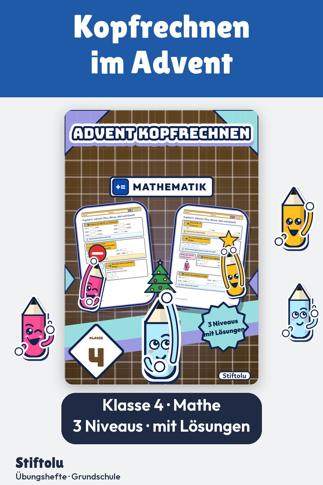

Werbung · Übungsheft von Stiftolu
Kopfrechnen im Advent: Übungsheft Klasse 4 mit Malaufgaben und Stufenzahlen

Kopfrechnen, Malaufgaben wie 4 mal 25 und das Ergänzen bis zur Stufenzahl: Das trainieren die Kinder in der Adventszeit auf drei Niveaus. Insgesamt 20 Seiten mit Lösungen und Handreichung für Lehrkräfte sind erhältlich auf eduki.